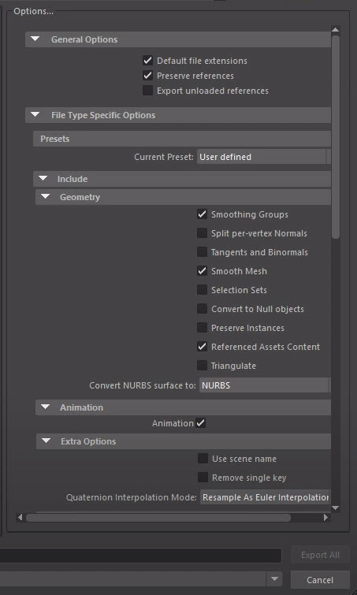
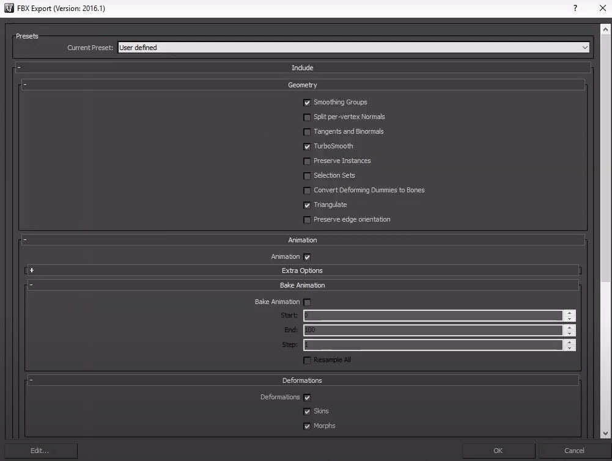
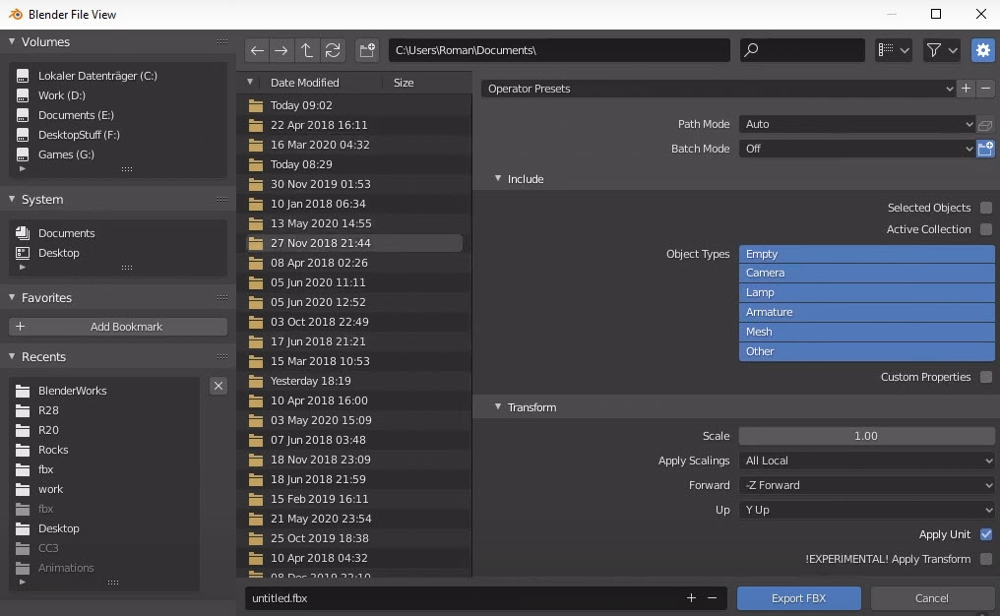
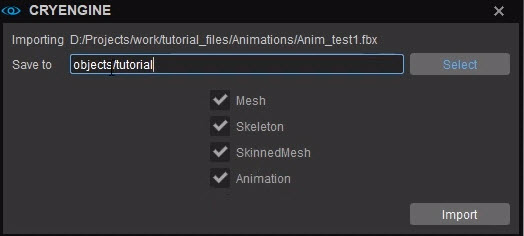
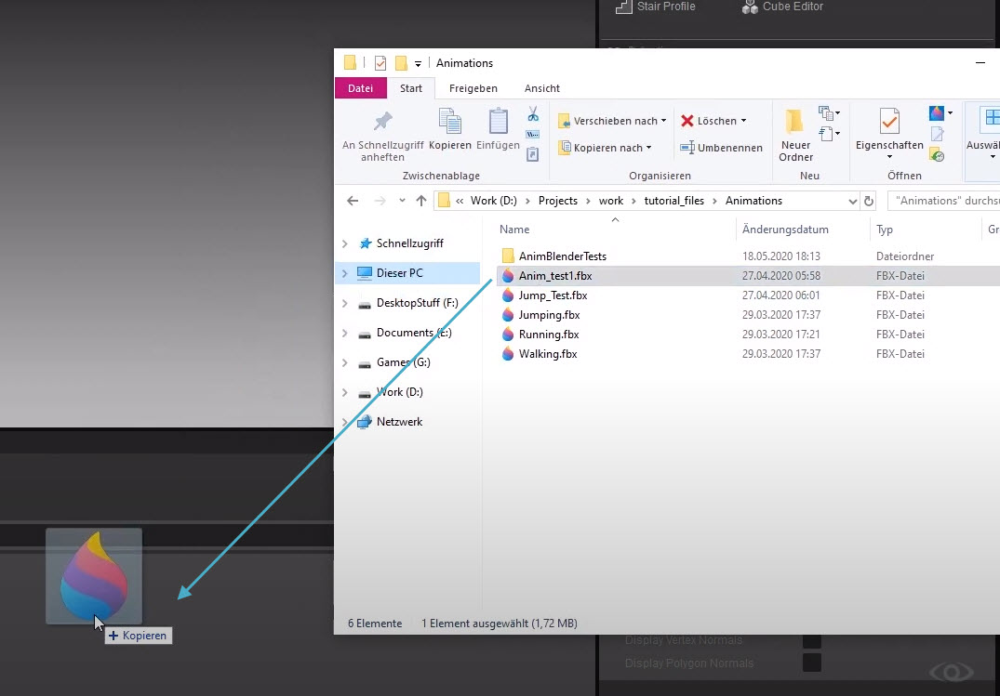

Prerequisites
- A character set up with a T-pose, idle and other animations. For information about how to do this, see the previous tutorials in this series.
Export Process in Maya
- Go to File → Export All (CHECK PATH)
- At the bottom of the window that opens, for Files of Type, choose FBX export.
- A number of options will now appear under File Types: Specific Options:

Maya Options panelIn these File Types: Specific Options, enable the following options:
- If you have a simple mesh, enable Geometry → Smoothing Groups, Smooth Mesh and Referenced Assets Content;
If your character has animations, enable Animation → Animation. Then also enable Bake Animation → Bake Animation.
Under Bake Animation, you can specify the exact frames of the animation you want to bake by using Start and End.
- If you have any blend shapes on your character, enable all 3 options under Deformed Models (i.e. Deformed Models, Skins and Blend Shapes);
- Click Export All.
Export Process in 3ds Max
- Go to File → Export → Export;
- Choose the location you want to save your .fbx file and give it a name;
- Click Save;
- The FBX Export window will now pop up:

3ds Max FBX Export windowIn this window, enable the following options:
- Under Geometry, enable Smoothing Group, TurboSmooth and Triangulate;
If your character has animations, enable Animation → Animation and Bake Animation → Bake Animation;
Under Bake Animation, you can specify the exact frames of the animation you want to bake by using Start and End.
- If you have any blend shapes on your character, enable all 3 options under Deformations (i.e. Deformations, Skins and Morphs);
- Click OK.
Export Process in Blender
- Go to File → Export → Fbx (.fbx);
The Blender File View window will pop up where you can define what to include in your export:

Blender File ViewIn this window, enable the following options:
- Under Object Types, choose the Object Types you want to include;
If necessary, change the forward and upward direction for the axes under Transform;
If you change anything here, don't forget to enable Apply Unit.
- Under Smoothing, choose Normals Only and enable Apply Modifiers;
- Under Bake Animation, enable all options (Key All Bones, NLA Strips, All Actions and Force Start/End Keying).
- Click Export FBX.
Import Process in CRYENGINE
The process below is the recommended workflow for importing assets into CRYENGINE. Although there are exporter plugins for 3ds Max and Maya, not all 3rd-party tools are supported with plugins, so we recommend the FBX workflow.
Drag and drop your .fbx file into the CRYENGINE Asset Browser:
By holding Ctrl while dragging and dropping, a window will pop up letting you choose which parts of your character you import:

Choose parts of character to import
Dragging and dropping your .fbx file into the Asset Browser- Wait for the import process to finish and you're done.